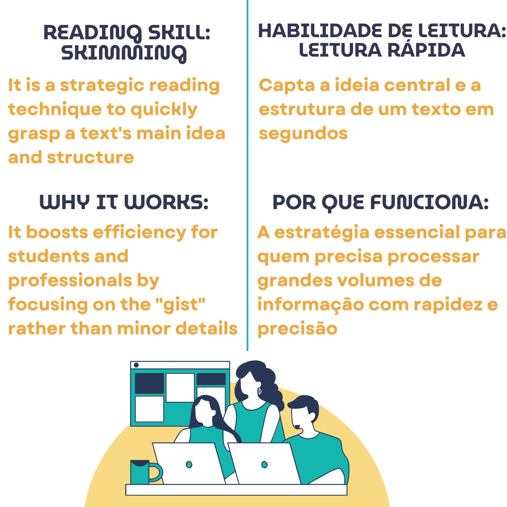

"Com a Teacher Caroline aprendi a ler artigos em metade do tempo e passei no mestrado!"
Aulas online de Inglês Instrumental e Acadêmico. Prepare-se para ingressar no Mestrado, Doutorado e conquistar seus certificados de proficiência.
Comece Agora
A Teacher Caroline Moreira é especialista em Inglês Instrumental e Acadêmico, com foco em leitura técnica, preparação para exames de proficiência e acompanhamento individualizado para quem busca ingressar em programas de pós-graduação.
Com aulas 100% online e material adaptado à sua área, ela trabalha competências de leitura, vocabulário e estratégias de prova para resultados rápidos e consistentes.
Agendar Aula
Precisa obter certificado de proficiência?
Leitura e interpretação de artigos complexos usando técnicas como Skimming e Scanning.
Treinamento intensivo e focado nas estratégias exatas para aprovação nos exames de proficiência.
Aulas VIP (individuais) ou em grupos reduzidos (com desconto), ao vivo, interativas e personalizadas.
Inglês para fins específicos (ESP - English for Specific Purposes)
O material é moldado às demandas específicas do aluno. Não perdemos tempo com o que você não precisa.
Uso de materiais reais de áreas técnicas (Saúde, Tecnologia, Jurídica, Engenharia, etc.) para garantir contexto real.
Foco cirúrgico no vocabulário exigido pelas bancas para obtenção de certificados e aprovação.
Aprenda Skimming: capte a ideia central e a estrutura de um texto em segundos, otimizando o processamento de grandes volumes de informação.
Prova social: alunos que melhoraram sua leitura e conquistas em exames.
"Com a Teacher Caroline aprendi a ler artigos em metade do tempo e passei no mestrado!"

"As técnicas de skimming e scanning me salvaram nas provas de proficiência."

"A orientação personalizada acelerou minha leitura acadêmica e minha confiança."

"Resultados reais: passei no IELTS com nota 7.5 após 2 meses."